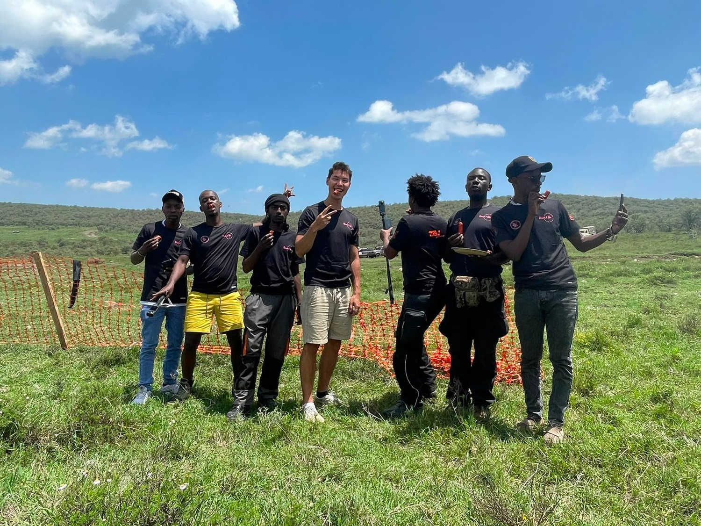
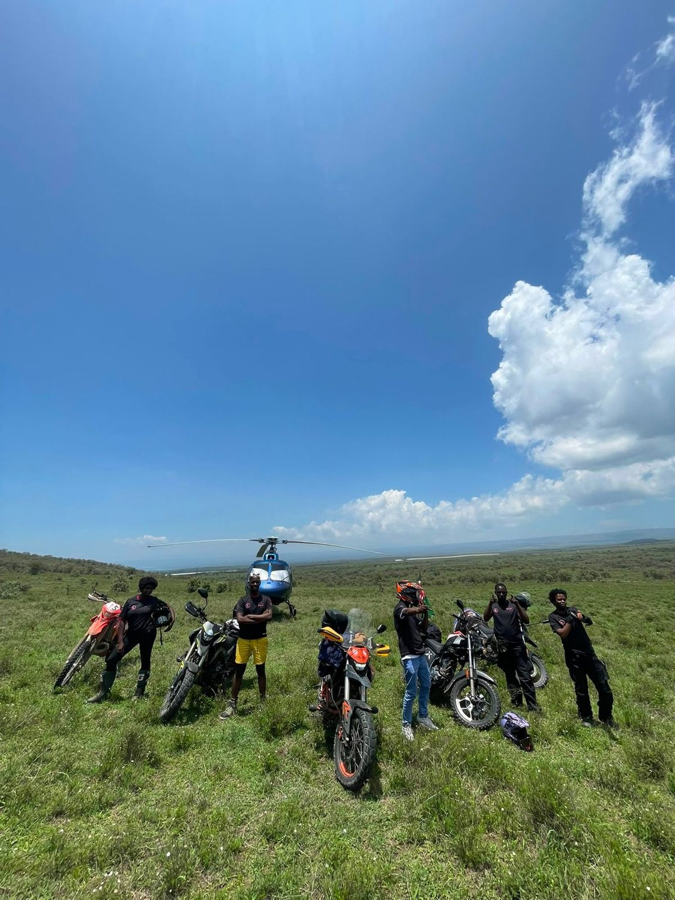
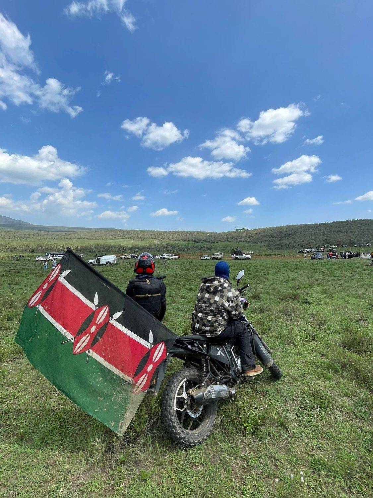
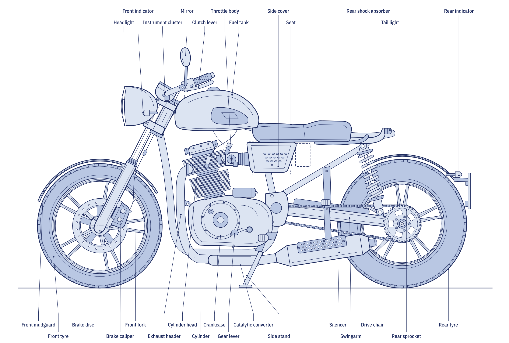

moto zeroTransitions Lab
moto zeroTransitions Lab
An open technical course on how motorcycles work
Moto Zero follows the motorcycle from the first combustion stroke to the battery management system of an electric bike. It explains every system well enough for you to describe it, specify it and repair it, and it is free to use, adapt and share.
It started on a field in Kenya
Moto Zero began with riders, not with a textbook. Marcel Kempers spent time in Kenya with a crew of young riders and mechanics, out on open grassland with dirt bikes, commuter machines and the first electric motorcycles, swapping tools, stories and spare parts.
In East Africa the motorcycle is not a hobby. Motorcycle taxis carry a large share of everyday trips, and electric bikes with battery swapping are arriving fast. The people who keep those machines running learn mostly by doing, and good, free technical material on how a motorcycle actually works is hard to find.
Moto Zero is the answer to that gap: an open course that anyone can use, from a trainee in a roadside workshop to an engineering student, built so that you can see every part, ride the machine and test yourself, in the browser and without an account.
Have a story, a workshop or a project of your own? Get in touch.



Photographs: Transitions Lab collection, Kenya.
A course, a set of tools and an open library
The course runs from the motorcycle’s anatomy and physics through the four-stroke and two-stroke engine, fuel, ignition and electrics, and drivetrain and chassis, to electric drive. Every chapter closes with review questions and worked answers, and every module contains workshop job sheets with tools, reference values and pass criteria.
Around the text sit interactive tools: a 3D Overview of the whole machine, a working cockpit, a Wiring Lab and a bike builder. The plates and 3D models were made for the course and can be reused in your own teaching.
Written for people who work with the machine
Job sheets, service limits and fault diagnosis, step by step.
The physics, efficiency and energy flow of combustion and electric drive.
A consistent technical reference with sources and regulations cited.
Service schedules, battery care, swapping and high-voltage safety.
What the controls do, how the machine works and what to check.
What is inside
From foundations to electric motorcycles
Each with objectives and review questions
Easy and hard, with explanations
Three motorcycles and 53 components
Blueprint-style technical drawings
A suggested learning path
Then find each of the 30 numbered assemblies on the Overview.
In that order: the engine first, then fuel, ignition and electrics.
Clutch to brakes applies to combustion and electric motorcycles alike.
Read battery, charging and starting, and electrical diagnosis, before electric drive.
Mark chapters as done as you go and take the quiz at the end of each module. My progress keeps track in your browser.
One real motorcycle behind the numbers
Reference values come from a current fuel-injected 125 cc single, the K-Light 125, so that every calculation and service limit maps onto a real machine. It is the kind of motorcycle that carries most of the world’s riders: an air-cooled single with fuel injection, an oxygen sensor and a catalytic converter, combined braking and a chain final drive.
Specifications differ between machines. Always confirm values and torque settings in the service manual for the motorcycle in front of you.

Created by Transitions Lab

Moto Zero was created by Marcel Kempers through Transitions Lab as an open educational programme. Marcel has a background in aerospace engineering and currently works for a motorcycle manufacturer. The course brings that experience together with the conviction that technical knowledge about motorcycles, combustion and electric, should be open to anyone who needs it.
You can contact me anytime at marcel@transitionslab.org, or through the contact page. Corrections, translations and teaching adaptations are welcome.
Licence
Text, plates and 3D models are released under CC BY-SA 4.0. You may copy, translate, adapt and share them, including in paid training, if you credit “Moto Zero, Transitions Lab” and share adaptations under the same licence. Photographs from the Transitions Lab collection are excluded. Edition 1.0, November 2026.